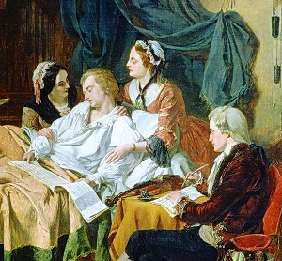

LIEBER NARR
Эти слова, означающие «любимый глупец», взяты из стихотворения, сочиненного Моцартом в память о ручном скворце, который жил у композитора.
Скворец умер, Вольфганг Амадей расплакался, торжественно похоронил птичку в саду и сочинил реквием. Пел:
Трелью, которую композитор подслушал у скворца, начинается аллегретто 17 концерта.
Моцарт был маленький, щуплый, рябой, пел тоненьким голосишком, любил танцевать и играть в биллиард, обожал скабрезничать и казался окружающим пустоголовым, легкомысленным попрыгунчиком. «Ты, Моцарт, недостоин сам себя».
5 декабря 1791 года, не дописав другой, большой «Реквием», Вольфганг Амадей умер. Вечным сном опочил и нам сердце разбил. Похоронили его по третьему разряду — с куда меньшей торжественностью, чем скворца.